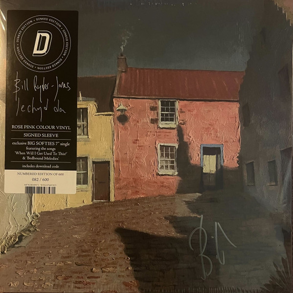

Bill Ryder Jones - Iechyd Da



Información del álbum facilitada por discogs.com:
Fecha de lanzamiento: 2024
Géneros: Folk, World, & Country
Estilos:
Pais: US
Votos: Media de 5.0 con 4 votos
Sello: Fusty Cunt
Tracklist:
I Know That It’s Like This (Baby)
A Bad Wind Blows In My Heart pt. 3
If Tomorrow Starts Without Me
We Don’t Need Them
I Hold Something In My Hand
This Can’t Go On
…And The Sea…
Nothing To Be Done
It’s Today Again
Christinha
How Beautiful I Am
Thankfully For Anthony
Nos Da
. Bonus 7"
A1. When Will I Get Used To This?
B1. Bedbound Melodies